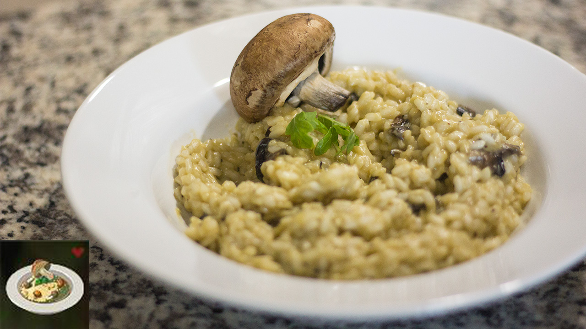

Vegetable Risotto
Prep Time: 20 mins
Cook Time: 40 mins
Total Time: 1 hr
Servings: 4

Description
Vegetable Risotto is a classic, Vegetarian dish enjoyed by various Hylians. Due to this dish's sweetness, it has a mild flavor.
The dish is made by cooking Hylian Rice, Goat Butter, Rock Salt, and either a Fortified Pumpkin or any Carrot
together in a cooking pot of your choice. It is mainly made by using ingredients with contradicting status effects.
You can eat them to heal some Hearts to your Life Gauge.
Ingredients
- 4 cups of Hylian Rice
- Goat Butter
- Rock Salt
- Chopped Fortified Pumpkin or any Carrot
- Miso Dashi Stock
- x2 4 cups of water
Steps
- Begin by making the miso dashi stock. Combine the 4 cups of water, chopped pumpkin or carrot, and rock salt in a large pot.
- Mix the ingredients in the pot.
- Place the broth in the pot, introducing it over a low heat slowly.
- In a small pan, heat the goat butter to a melt
- Add in 4 cups of water and Hylian Rice to cook. Cover the Pan.
- After the rice is of a fluffy text, add the combined ingredients from steps 1 and 2 onto the pan.